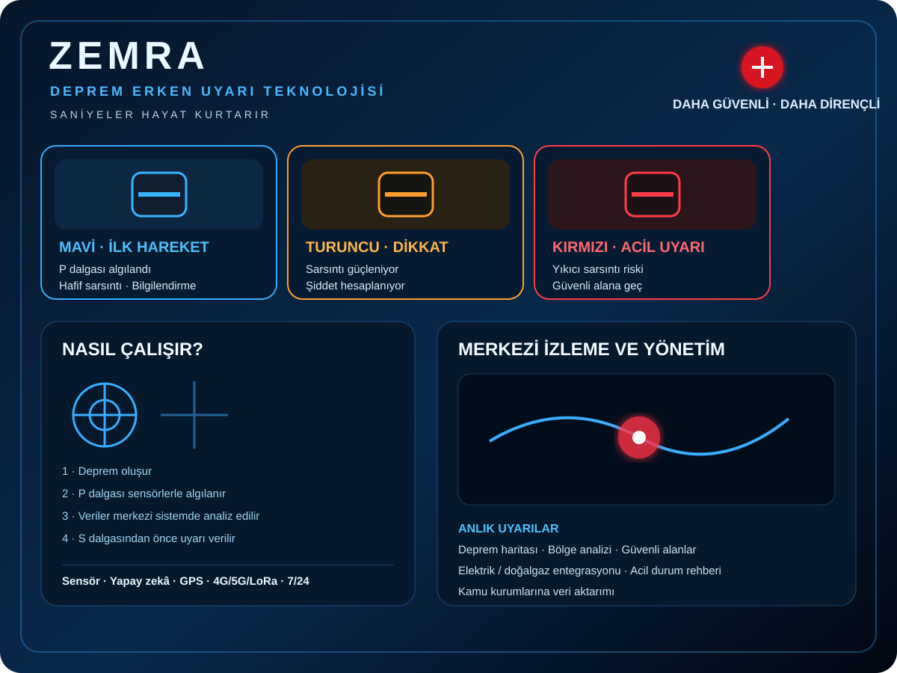

01 · MOBİLİTE
01 · MOBİLİTE
ANKA HYDRA
Şehir aracı, SUV, performans, ticari araç, VAN, BUS, motosiklet, ambulans ve yarış araçlarını kapsayan ANKA araç ailesi.
ANKA PROJECTS; akıllı mobilite, tarım, motor teknolojileri, hareket desteği ve afet çözümlerini tek çatı altında sunar.
Her ana proje kendi görseliyle sunulur. Patent ve gizlilik nedeniyle hassas teknik ayrıntılar kamuya açık sayfada paylaşılmaz.
Şehir aracı, SUV, performans, ticari araç, VAN, BUS, motosiklet, ambulans ve yarış araçlarını kapsayan ANKA araç ailesi.

Deprem ve afet odaklı erken farkındalık, izleme ve destek çözümleri için geliştirilen proje.

Akıllı tarım, hedefli sulama ve kaynak verimliliği odağında geliştirilen proje.

Mevcut dizel motorlarda verimlilik, çekiş ve emisyon hedefleri üzerine geliştirilen optimizasyon projesi.

Hareket desteği ve günlük yaşam bağımsızlığını hedefleyen nöromüsküler destek sistemi.
Afet risklerine yönelik proje ailesi. Teknik ayrıntılar patent ve gizlilik yaklaşımıyla korunur.

Sel ve taşkın risklerine yönelik teknoloji konsepti.

Volkanik risklere yönelik teknoloji konsepti.

Çığ risklerine yönelik teknoloji konsepti.
ANKA PROJECTS kapsamındaki proje adları, konseptler, tasarımlar ve teknik çalışmalar için fikri mülkiyet haklarının korunması esastır. Bu sayfa tanıtım amaçlıdır.
Patentlenebilir veya ticari açıdan hassas olabilecek ayrıntılı teknik bilgi, çizim, ölçü, üretim yöntemi ve özel algoritmalar kamuya açık olarak paylaşılmaz.